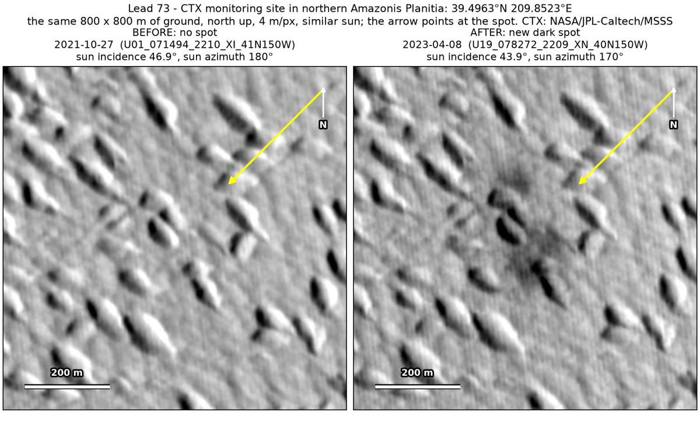
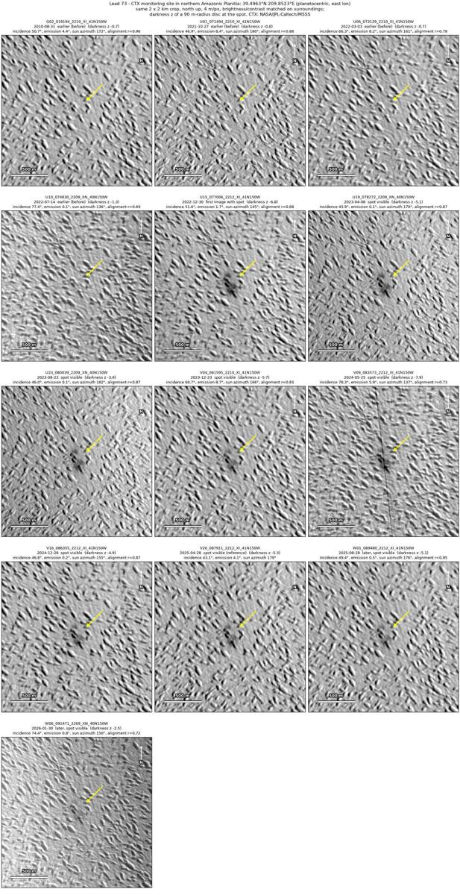
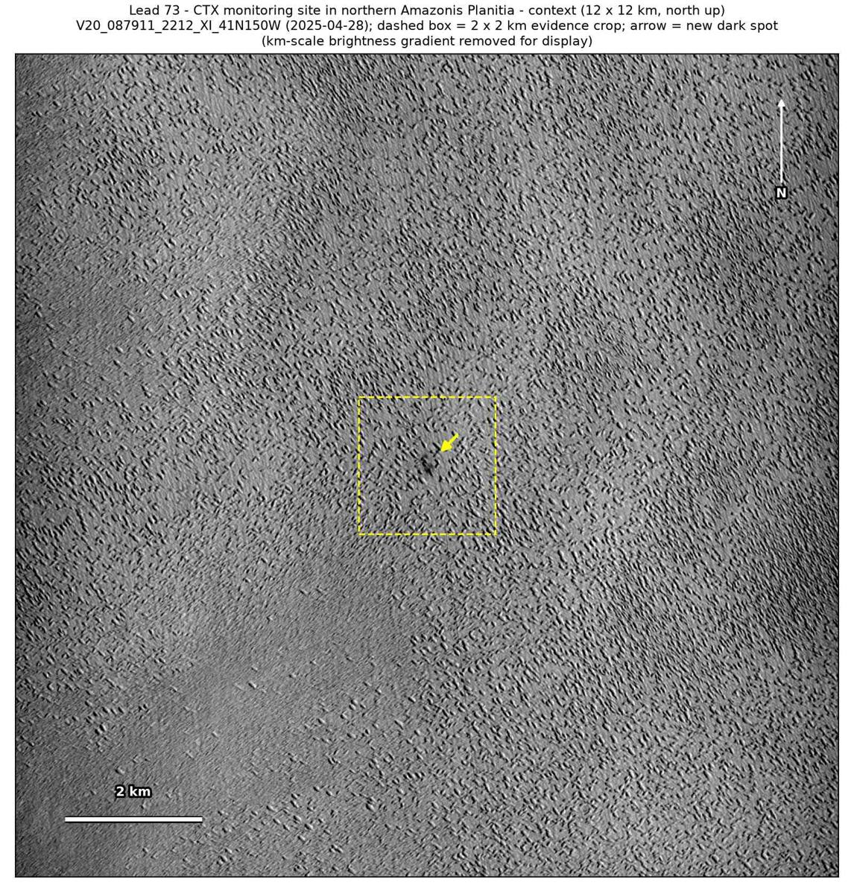

Professor of Mathematics
Paata Ivanisvili
Department of Mathematics, University of California, Irvine

← Possible new impact sites on Mars
Candidate 73: CTX monitoring site in northern Amazonis Planitia
Strong · roughly 75%

What changed. A diffuse dark patch about 210 m across, in two lobes in a north–south line, appeared on flat ground between small knobs at a site in northern Amazonis Planitia that CTX photographs regularly, between July 2022 and December 2022, and shows in nine CTX images from nine orbits up to January 2026.
Why it may be a new impact. Four earlier images, from 2010 to July 2022, show no patch there; the October 2021 image was taken under the same sun as the April 2023 one, and the July 2022 image under the same sun as the May 2024 one. Much of the darkening, including the whole northern lobe, lies on flat ground between the knobs, and a patch that appeared suddenly, with no track, and stayed for three years fits a small new impact.
- Location
- 39.496° N, 209.852° E (150.148° W)
- Absent
- 31 August 2010, 27 October 2021, 3 March 2022 and 14 July 2022
- Present
- 30 December 2022, 8 April 2023, 23 August 2023, 23 December 2023, 25 May 2024, 28 December 2024, 28 April 2025, 28 August 2025 and 30 January 2026
- Size
- Diffuse dark patch about 210 m across (172 × 292 m), in two lobes in a north–south line
- Confidence
- Strong candidate; roughly 75% that it is a new impact.
- Caveat
- No crater can be made out in these images, so the impact reading rests on the patch’s shape and its sudden appearance. Dust avalanches on the knobs’ flanks, perhaps set off together, remain possible. It lies outside every footprint of the high-resolution HiRISE camera; the nearest ends 25.1 km away. Like every candidate here, it is unconfirmed: see the caveat.

